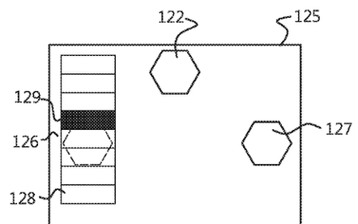

Portfolio
UX, prototypage et développement informatique
Voici des illustrations de certaines de mes réalisations.
Salut!
Si vous êtes arrivé ici, c'est que vous devez déjà connaitre mon nom, mais comme j'ai un égo surdimensionné, je le répète: je m'appelle donc Guillaume Spalla.
Outre un humour douteux, j'ai un parcours interdisciplinaire autour de la conception centrée sur l'humain et des interactions humain-machine, notamment pour des problématiques de santé. Ben oui, chacun ses passions.
J'ai travaillé dix ans en industrie, avant de réaliser un doctorat en informatique.
Si vous me cherchez, vous me trouverez au Québec, dans la région de Montréal, peut-être sur mon vélo ou mes skis de fond.
J'ai un parcours interdisciplinaire qui me permet de comprendre les besoins des utilisateurs avec la méthode de conception centrée sur l'humain. Cette méthodologie a été au cœur de mon doctorat; et je l'enseigne à des étudiants de baccalauréat.
Sans être expert dans chaque méthode, je sais concevoir, réaliser et analyser des observations, des groupes de discussion focalisés, des entretiens, des personas, des maquettes, des évaluations expertes et des tests utilisateurs. Je maitrise l'utilisation de plusieurs questionnaires standardisés, comme AttrakDiff, SUS, CSUQ, ASQ et NASA-TLX. J'analyse les données en suivant des approches qualitatives et quantitatives.
Je sais traduire les besoins en choix technologiques, et réaliser des preuves de concept d'interactions avec des technologies émergentes, en tenant compte des contraintes environnementales ou économiques. Mon parcours en informatique me permet de développer les logiciels en fonction des besoins.
Avec mon expérience en recherche, je sais rédiger des articles scientifiques, réaliser des revues de la littérature, faire des choix basés sur la science, et faire des demandes éthiques.
Je développe une expérience en enseignement. J'ai eu l'occasion de créer le contenu et enseigner durant quatre sessions le cours GTA621 sur les bases de l'expérience utilisateur pour des étudiants de l'école de gestion de l'université de Sherbrooke. J'ai aussi enseigné durant deux sessions le cours GCE841/GCE842, qui se focalise sur l'implantation de tests utilisateurs.
Enfin, j'ai de l'expérience dans la définition et le suivi de projet. Au cours de ma carrière, j'ai supervisé 19 étudiants en stage de baccalauréat ou de maitrise.
Voici des illustrations de certaines de mes réalisations.
N'hésitez pas à me contacter pour toute question que vous pourriez avoir. Je suis aussi disponible pour discuter d'intervention en recherche utilisateur, prototypage ou formation/enseignement.
Vous trouverez dans mon CV mon adresse courriel pour me contacter.